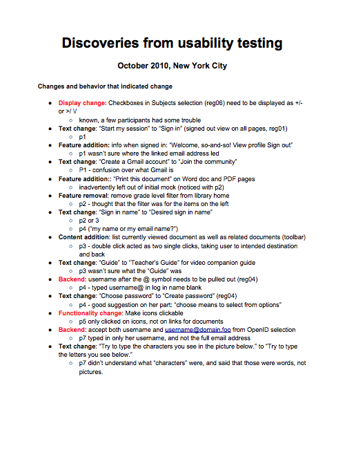
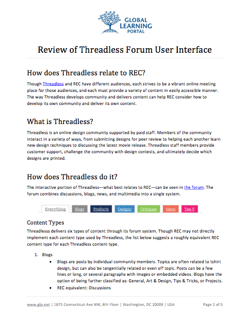
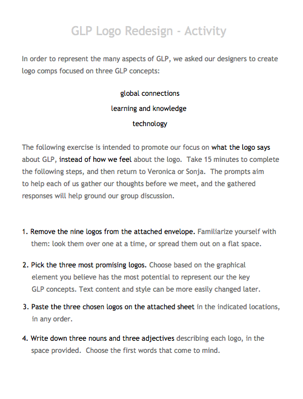
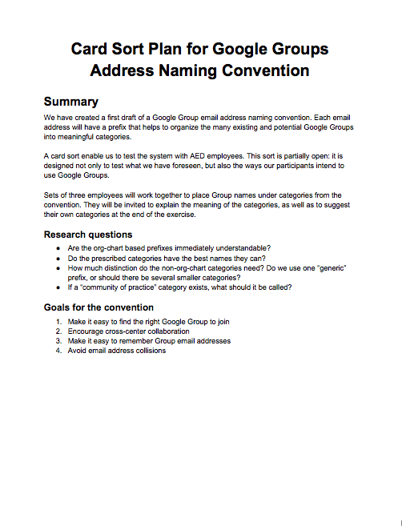

Portfolio: Research
Research report: Usability testing
Challenge:
Document the second set of research for the Rwanda Education Commons.
Solution:
This quick and simple document served as a way for us to record the results of the usability tests. Its list of changes and observed behaviors provided just the level of context our team needed.
Competitive review: Online communities
Challenge:
Find ways to design an online community for teachers.
Solution:
Though the Threadless audience of the designers is quite different from our group of teachers, the Threadless website provided inspiration. This overview highlighted features and an approach from which the Rwanda Education Commons could learn.
Research design: Consensus on a logo
Challenge:
Select a new logo for the Global Learning Portal.
Solution:
This activity encouraged team members to think about their preferences before we met. The kits were intentionally hands-on: they included printed logo comps, instructions, and a glue stick. By the time we met, not only had each member already voiced their responses to the designs, but we had also achieved a consensus.
Research plan: Naming convention card sort
Challenge:
Prevent collisions between Google Groups and email addresses when AED switched from Novell GroupWise mail to Gmail.
Solution:
I developed a naming convention and tested it with users through a card sort. The research allowed me to refine the system into a convention that prevented collisions and enabled users to find and remember the Groups they sought.
Download PDF version of full UX portfolio.